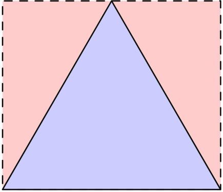
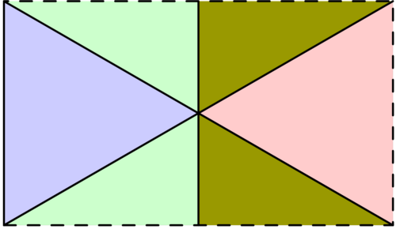
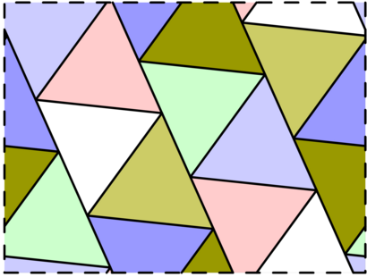
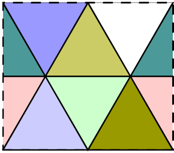
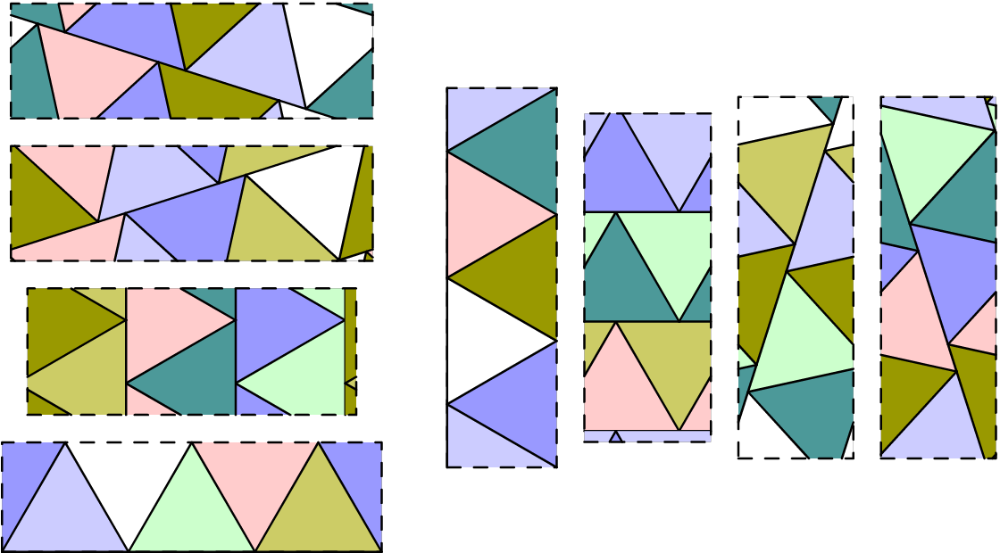

Project Euler 780
Project Euler 780
题目
Toriangulations
For positive real numbers \(a,b\), an \(a\times b\) torus is a rectangle of width \(a\) and height \(b\), with left and right sides identified, as well as top and bottom sides identified. In other words, when tracing a path on the rectangle, reaching an edge results in “wrapping round” to the corresponding point on the opposite edge.
A tiling of a torus is a way to dissect it into equilateral triangles of edge length \(1\). For example, the following three diagrams illustrate respectively a \(1\times \dfrac{\sqrt{3}}{2}\) torus with two triangles, a \(\sqrt{3}\times 1\) torus with four triangles, and an approximately \(2.8432\times 2.1322\) torus with fourteen triangles:



Two tilings of an \(a\times b\) torus are called equivalent if it is possible to obtain one from the other by continuously moving all triangles so that no gaps appear and no triangles overlap at any stage during the movement. For example, the animation below shows an equivalence between two tilings:

Let \(F(n)\) be the total number of non-equivalent tilings of all possible tori with exactly \(n\) triangles. For example, \(F(6)=8\), with the eight non-equivalent tilings with six triangles listed below:

Let \(G(N)=\sum_{n=1}^N F(n)\). You are given that \(G(6)=14, G(100)=8090\), and \(G(10^5)\equiv 645124048 \pmod{1\,000\,000\,007}\).
Find \(G(10^9)\). Give your answer modulo \(1\,000\,000\,007\).
解决方案
把一个 \(a\times b\) 的 torus 看成矩形基本域，两组对边分别粘合。若它被边长 \(1\) 的正三角形铺满，那么把基本域在平面上按周期复制，就得到一个整张平面的边长 \(1\) 等边三角形铺法（周期性铺法）。
因此，可见任意这样的平面铺法都可以看成由若干条平行条带组成，每条条带宽度固定为 \(\sqrt{3} / 2\)，内部是上下交替的单位等边三角形链，并且一般情况下条带方向是唯一的；但当铺法恰好是三角晶格（六角/蜂窝意义下的那类）时，会有 \(3\) 个等价方向可选。
这立即带来两个结论：每条条带里上下三角形数量相同，所以总三角形数 \(n\) 必须是偶数；我们可以先按条带方向计数，再把三角晶格导致的三重计数修正掉。因此奇数 \(n\) 时 \(F(n)=0\)。
现在假设\(n\)是偶数。设 \(n=2m\)。设 torus 基本域边长为 \(X\)（水平）和 \(Y\)（竖直），面积满足\(XY = \dfrac{\sqrt 3}{4}n = \dfrac{\sqrt 3}{2}m.\)
固定某个条带方向。沿该方向绕 torus 一圈后会闭合，因此该方向相对矩形的斜率必须是有理绕行数：设横向绕行 \(p\) 次、纵向绕行 \(q\) 次（\(p,q\) 互素，允许其中一个为 \(0\)）；若共有 \(k\) 条平行条带（同方向的不同平移类），则每条条带长度恰好是 \(m/k\)（因为每条条带含 \(m/k\) 个上三角与 \(m/k\) 个下三角，总 \(2m/k\) 个三角，沿长度方向每个三角贡献底边长 \(1\)）。于是有长度方程：
\[ (pX)^2 + (qY)^2 = \left(\frac{m}{k}\right)^2. \]
同时面积方程为上面的 \(XY = (\sqrt3/2)m\)。把\(A = pX, B = qY\)代入，则\(A^2+B^2=\left(\dfrac{m}{k}\right)^2, AB = pq\cdot XY = pq\cdot\dfrac{\sqrt3}{2}m.\)因此\((A^2-B^2)^2=(A^2+B^2)^2-4A^2B^2=\left(\dfrac{m}{k}\right)^4-3p^2q^2m^2.\)要有实数解，必须且只需右边非负，即\(\left(\dfrac{m}{k}\right)^4 \ge 3p^2q^2m^2\iff m \ge \sqrt3k^2pq.\)
因此，若 \(p=0\) 或 \(q=0\)（条带平行于坐标轴），给定 \((k,p,q)\) 时只有 \(1\) 个正解 \((X,Y)\)；若 \(p,q>0\)，由 \(A^2+B^2\) 与 \(|A^2-B^2|\) 可得两种解（交换大/小分配），所以有 \(2\) 个正解。此外还要计入正负斜率对 torus 铺法计数的区别，再乘 \(2\)。
于是轴向条带（\(p=0\) 或 \(q=0\)）每组贡献 \(2\)；非轴向条带（\(p,q>0\)）每组贡献 \(4\)。
令\(u=kp, v=kq.\)则 \(\gcd(u,v)=k\)，且 \(p,q\) 互素。非轴向时 \(u,v\ge1\)。条件\(m \ge \sqrt3k^2pq\)变成\(m \ge \sqrt3uv.\)但 \(m\) 还必须是 \(k=\gcd(u,v)\) 的倍数（因为 \(m=kt\)）。所以在 \(1\le n\le N\)（即 \(1\le m\le \lfloor N/2\rfloor\)）范围内，对固定 \((u,v)\) 的可选 \(m\) 数量是\(\left\lfloor \dfrac{N}{2\gcd(u,v)} \right\rfloor-\left\lfloor \sqrt3\cdot \dfrac{uv}{\gcd(u,v)} \right\rfloor.\)
设\(M=\left\lfloor\dfrac N2\right\rfloor,L=\left\lfloor \dfrac{M}{\sqrt3}\right\rfloor=\left\lfloor\dfrac{N}{2\sqrt3}\right\rfloor.\)则所有条带方向计数（暂未修正三重计数）为
\[ G_{\text{strip}}(N) =2D(M)+ 4\sum_{uv\le L} \left( \left\lfloor \frac{N}{2\gcd(u,v)} \right\rfloor- \left\lfloor \sqrt3\cdot \frac{uv}{\gcd(u,v)} \right\rfloor \right), \]
其中\(\displaystyle D(x)=\sum_{t=1}^{x}\left\lfloor \frac{x}{t}\right\rfloor.\)上式第一项 \(2D(M)\) 就是轴向条带的贡献，第二项是非轴向条带的贡献。
不过上面的主计数 \(G_{\text{strip}}(N)\) 是按条带方向来数铺法的。对于一般铺法，这样计数没有问题；但当铺法的所有顶点都落在三角晶格点上时，会出现一个特殊现象：同一个铺法可以沿三角晶格的三组轴方向中的任意一组切成条带，因此在 \(G_{\text{strip}}(N)\) 中会被计数 \(3\) 次，而在 \(F(n)\) 中它本应只计 \(1\) 次。
因此，这一类三角晶格铺法需要做统一修正：每个铺法多算了 \(2\) 次，所以最终要减去这类铺法总数的 \(2\) 倍。下面我们直接参数化并计数这类铺法。
为了计算这部分修正项，下面采用等价的晶格矩形原始块参数化。
三角晶格上的（按旋转归类后的）原始矩形可由整数对 \((u,v)\) 参数化，并对应到基本面积参数\(Q(u,v)=u^2+uv+v^2.\)满足原始性（即去掉可进一步分解、以及会导致三方向重复退化的情形）的条件可写成：\(u>v,\gcd(u,v)=1,2u+v \not\equiv 0 \pmod 3\)
此外，还要单独加上最基本的轴向原始块（对应 \(Q=1\) 的那一族）。
令\(X=\left\lfloor\frac{N}{4}\right\rfloor.\)定义 \(H(X)\) 为这些原始晶格矩形所生成的 torus 铺法前缀计数（并且把横向/纵向堆叠产生的所有倍数都计入）：
\[ H(X)=D(X)+2\sum_{\substack{u>v\ge1\\ \gcd(u,v)=1\\ 2u+v\not\equiv0\pmod 3\\ Q(u,v)\le X}} D\left(\left\lfloor\frac{X}{Q(u,v)}\right\rfloor\right). \]
在这里，\(D(X)\) 是轴向原始块族的贡献，以及非轴向部分前面的系数 \(2\) 来自旋转/对称带来的两种取向。
由此可得，三角晶格型 torus 铺法的总前缀数为 \(2H(X)\)（每个原始矩形对应两种取向）。而这部分在 \(G_{\text{strip}}(N)\) 中被数了 \(3\) 次，所以相对于正确计数需要额外减去\(2\times (2H(X)) = 4H(X).\)
因此最终修正后的结果为
\[ G(N)=G_{\text{strip}}(N)-4H\left(\left\lfloor\frac N4\right\rfloor\right). \]
直接双重枚举 \(uv\le L\) 会很慢，我们需要两个关键优化。
在非轴向条带项中，固定某个参数（例如固定 \(v\)）后，会出现形如“统计与某个整数互素的个数”的子问题。
设需要统计\(\#\{t\le T:\gcd(t,m)=1\},\)则可用 Möbius 反演写成\(\displaystyle\#\{t\le T:\gcd(t,m)=1\}=\sum_{q\mid m}\mu(q)\left\lfloor\frac{T}{q}\right\rfloor.\)
这样一来，原本带有 \(\gcd\) 约束的计数，就转化为对 \(m\) 的因子（或无平方因子）的求和。在实现中，只需预处理：Möbius 函数 \(\mu(\cdot)\)；每个整数的因子表（或无平方因子表）；就可以把互素计数压缩到 \(O\left(\sum \tau(v)\right)\) 量级处理（这里 \(\tau\) 是约数个数函数）。
这一步主要用于条带主项中由 \(\gcd\) 导致的计数拆分，是后续 Beatty 求和的前提。
可见，条带主项的另一部分会反复出现形如\(\sum \left\lfloor c\sqrt3\cdot t \right\rfloor\)的求和（其中 \(c\) 为整数或由当前枚举参数确定的常数）。这正是 Beatty 型前缀和。定义\(\displaystyle T(n)=\frac{n(n+1)}2,B(\alpha,n)=\sum_{k=1}^{n}\lfloor k\alpha\rfloor.\)对无理数 \(\alpha>1\)，递归分两种情况。大致过程如下：
当 \(\alpha\ge 2\) 时，先拆整数部分。设\(\alpha=r+\beta, r=\lfloor \alpha\rfloor, 0<\beta<1.\)则\(\lfloor k\alpha\rfloor=\lfloor kr+k\beta\rfloor=kr+\lfloor k\beta\rfloor,\)所以\(\displaystyle B(\alpha,n)=rT(n)+\sum_{k=1}^{n}\lfloor k\beta\rfloor.\)
为了继续使用参数 \(>1\) 的递归形式，通常把 \(\beta\) 改写成 \(1+(\beta-1)\) 的处理方式。因此，更直接地写成（取 \(i=\lfloor\alpha\rfloor-1\)，使 \(\alpha-i\in(1,2)\)）：
\[B(\alpha,n)=iT(n)+B(\alpha-i,n).\]
当 \(1<\alpha<2\) 时，用 Beatty 互补递归。设\(m=\lfloor (\alpha-1)n\rfloor, t=\lfloor \alpha n\rfloor,\)并令\(\alpha'=\dfrac{\alpha}{\alpha-1}.\)则有递归
\[ B(\alpha,n)=T(t)-B(\alpha',m). \]
其中 \(t=\lfloor \alpha n\rfloor\)，\(m=\lfloor(\alpha-1)n\rfloor=t-n\)。
这一步会把参数从 \((1,2)\) 映射到一个新的大于 \(2\) 的无理数，再配合上一条拆整数部分继续递归。由此我们方便地计算出了这类无理数向下取整前缀和。
其余部分（包括三角晶格修正项）在实现中按前述参数化直接计算即可.
代码
1 | from typing import List, Tuple |